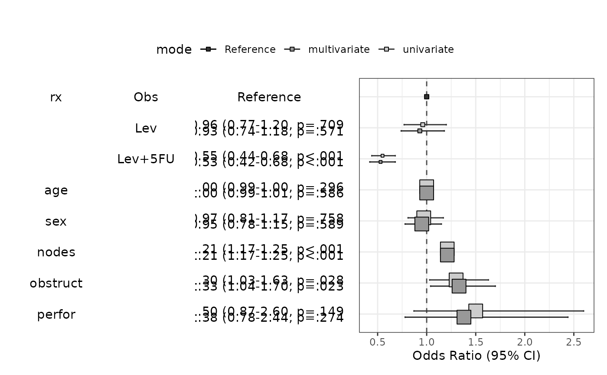
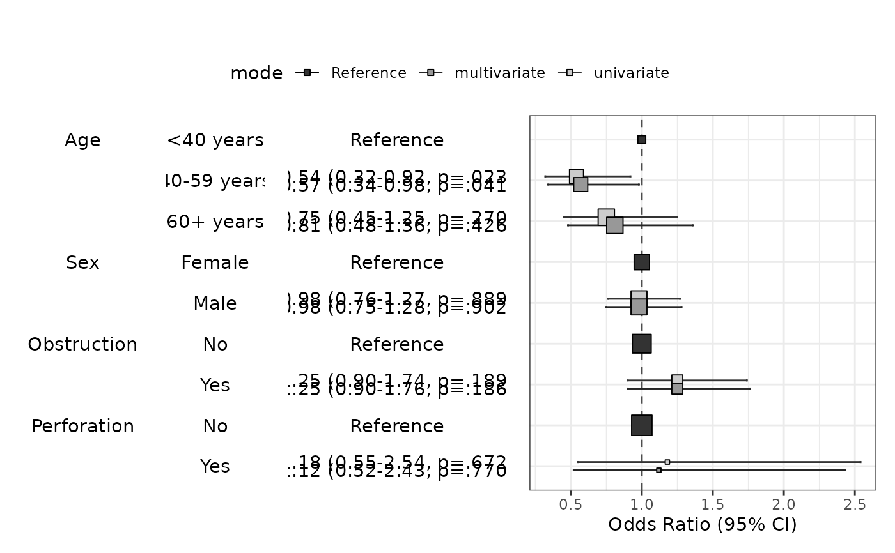
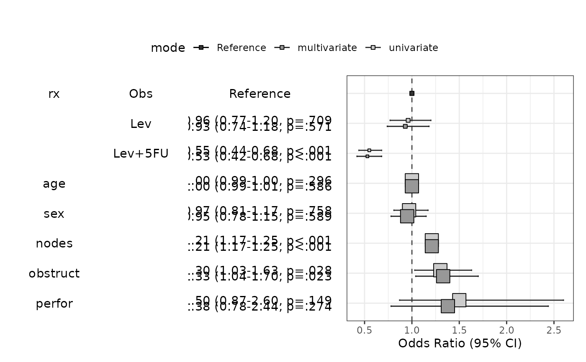
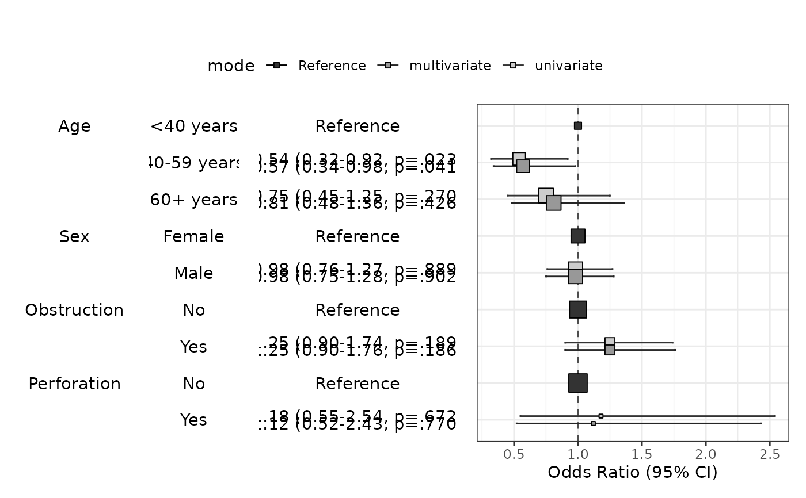

Draw coefficients/odds ratio/hazard ratio plot
Usage
modelPlot(
fit,
widths = NULL,
change.pointsize = TRUE,
show.OR = TRUE,
show.ref = TRUE,
bw = TRUE,
legend.position = "top",
...
)Arguments
- fit
An object of class glm
- widths
Numeric vector
- change.pointsize
logical Whether or not change point size
- show.OR
logical Whether or not show odds ratio
- show.ref
logical Whether or not show reference
- bw
logical If true, use grey scale
- legend.position
legend position default value is 'top'
- ...
Further arguments to be passed to autoReg()
Value
modelPlot returns an object of class "modelPlot" An object of class modelPlot is a list containing at least of the following components:
- tab1
The first table containing names
- tab2
The 2nd table containing levels
- tab3
The 3rd table containing coefficients or odds ratio or hazards ratio
- p
A ggplot
- widths
the widths of the tables and the ggplot
Examples
fit=lm(mpg~wt*hp+am,data=mtcars)
modelPlot(fit,widths=c(1,0,2,3))
 modelPlot(fit,uni=TRUE,threshold=1,widths=c(1,0,2,3))
modelPlot(fit,uni=TRUE,threshold=1,widths=c(1,0,2,3))
 fit=lm(Sepal.Width~Sepal.Length*Species,data=iris)
modelPlot(fit)
fit=lm(Sepal.Width~Sepal.Length*Species,data=iris)
modelPlot(fit)
 modelPlot(fit,uni=TRUE,change.pointsize=FALSE)
modelPlot(fit,uni=TRUE,change.pointsize=FALSE)
 # \donttest{
data(cancer,package="survival")
fit=glm(status~rx+age+sex+nodes+obstruct+perfor,data=colon,family="binomial")
modelPlot(fit)
modelPlot(fit,uni=TRUE,multi=TRUE,threshold=1)

modelPlot(fit,multi=TRUE,imputed=TRUE,change.pointsize=FALSE)
data(colon_s,package="finalfit")
fit=glm(mort_5yr~age.factor+sex.factor+obstruct.factor+perfor.factor,data=colon_s,family="binomial")
modelPlot(fit)
modelPlot(fit,uni=TRUE,multi=TRUE,threshold=1)

modelPlot(fit,uni=TRUE,multi=TRUE)
modelPlot(fit,uni=TRUE,multi=TRUE,threshold=1,show.ref=FALSE)
library(survival)
fit=coxph(Surv(time,status)~age+sex+obstruct+perfor,data=colon)
modelPlot(fit)
# \donttest{
data(cancer,package="survival")
fit=glm(status~rx+age+sex+nodes+obstruct+perfor,data=colon,family="binomial")
modelPlot(fit)
modelPlot(fit,uni=TRUE,multi=TRUE,threshold=1)

modelPlot(fit,multi=TRUE,imputed=TRUE,change.pointsize=FALSE)
data(colon_s,package="finalfit")
fit=glm(mort_5yr~age.factor+sex.factor+obstruct.factor+perfor.factor,data=colon_s,family="binomial")
modelPlot(fit)
modelPlot(fit,uni=TRUE,multi=TRUE,threshold=1)

modelPlot(fit,uni=TRUE,multi=TRUE)
modelPlot(fit,uni=TRUE,multi=TRUE,threshold=1,show.ref=FALSE)
library(survival)
fit=coxph(Surv(time,status)~age+sex+obstruct+perfor,data=colon)
modelPlot(fit)
 modelPlot(fit,uni=TRUE,threshold=1)
modelPlot(fit,uni=TRUE,threshold=1)
 fit=coxph(Surv(time,status)~age.factor+sex.factor+obstruct.factor+perfor.factor,data=colon_s)
modelPlot(fit)
fit=coxph(Surv(time,status)~age.factor+sex.factor+obstruct.factor+perfor.factor,data=colon_s)
modelPlot(fit)
 modelPlot(fit,uni=TRUE,threshold=1)
modelPlot(fit,uni=TRUE,threshold=1)
 modelPlot(fit,uni=TRUE,threshold=1,show.ref=FALSE)
modelPlot(fit,uni=TRUE,threshold=1,show.ref=FALSE)
 modelPlot(fit,imputed=TRUE)
modelPlot(fit,imputed=TRUE)
 # }
# }